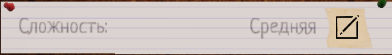

Как начать игру?
Попадая в меню вам нужно будет начать соло игру или же кооператив, в нашем случае мы берем соло режим "Одиночный режим", нажимая клавишу ESC вы сможете ходить по лоби, подойдите к доске и нажмити на неё чтобы вернуться, или нажмите клавишу пробел, дальше у вас буду 2 стрелочки, слева и справа.
Левая стрелочка отвечает за выбор локации на которой будет проходить игра, которые открываются по мере прокачки вашего уровня.
Справа будет ваше оборудование которое вы сможете покупать со временем, однако самое важное оборудование вам будет даваться бесплатно. в центре вам предложат выбрать сложность игры после выбора локации.
После выбора локации, сложности и добавления вам нужных предметов, мы можем начать нажав "Поехали!" или же "Готов!" после чего вы сможете нажать "Начать" и запустить игру.
Основной экран
На этом экране можно выбрать сложность, а так же справа увидеть какие предметы сейчас находяться в грузовике(те что будут у вас в игре). Сложность можно выбрать после выбора карты, при игре в коопе у вас будет код сверху экрана, он будет скрыт, однако вы сможете его скопировать или открыть для просмотра. Все игроки будут отображаться на главном экране, максимальное допустимое количество игроков в лобби 4 человека.
Экран выбора карты
Выберите карту на которой будете играть, они будут открываться по мере повышения уровня игрока, после выбора карты сможете выбрать сложность. Есть карты среднего размера и маленького, среднего размера карты отличаются своей обьемностью, найти призрака уже непосильная задача, что уж говорить о проклятом предмете...
Экран покупок
Тут вы сможете купить предметы для вашего приключения, сверху справа ваши деньги, в вакладке магазина вы можете купить вещи что остануться у вас в инвенторе, в вкладке шаблона вам нужно нажать "+" чтобы включить его в список предметов которые вы добавите в фургон, после того как вы выделили все вещи которые хотите добавить справа на панеле вам будет показано какие вещ и сколько будет добавлено в фургон, после чего нажмите "Добавить" чтобы они появились в фургоне, и так же "Убрать" чтобы удалить их из фургона. Точнее об этом тут: ОБОРУДОВАНИЕ!
Любитель (Легкий уровень сложности)
- 5 минут на расстановку оборудования и поиск комнаты призрака;
- Множитель денежного вознаграждения - Х1;
- Множитель полученного опыта за выполнения заданий - Х1;
- Уровень вашего рассудка (потом расскажу о нем) понижается медленно;
- Общая частота паранормальных явлений и продолжительность охоты (о них тоже расскажу позже) стандартные;
- Призрак дает все три улики;
- Если вы умрёте, вам вернут 50% от стоимости вашего оборудования по страховке.
Средний (Ну средний, написано же)
- 2 минуты на расстановку оборудования и поиск комнаты призрака;
- Множитель вознаграждения - Х2;
- Множитель полученного опыта за выполнения заданий - Х2;
- Уровень вашего рассудка понижается на 50% быстрее;
- Общая частота паранормальных явлений и продолжительность охоты увеличены;
- Призрак дает все три улики;
- Если вы умрёте, вам вернут 25% от стоимости вашего оборудования по страховке.
Профессионал (Сложный уровень сложности)

- Времени на расстановку оборудования и поиск комнаты призрака нет, могут убить в любой момент;
- Множитель вознаграждения - Х3;
- Множитель полученного опыта за выполнения заданий - Х3;
- Уровень вашего рассудка понижается на 100% быстрее;
- Общая частота паранормальных явлений и продолжительность охоты увеличены ещё больше;
- Призрак дает все три улики;
- Если вы умрёте, вам ничего не вернут.
Кошмар (Очень сложный уровень сложности)

- Времени на расстановку оборудования и поиск комнаты призрака нет, могут убить в любой момент;
- Множитель вознаграждения - Х4;
- Множитель полученного опыта за выполнения заданий - Х4;
- Уровень вашего рассудка понижается на 100% быстрее;
- Общая частота паранормальных явлений и продолжительность охоты увеличены ещё больше;
- Призрак дает только две улики, третью вам не дадут;
- Если вы умрёте, вам ничего не вернут.
- Также в фургоне экраны рассудка и активности сломаны, поэтому из фургона вы не сможете понять, началась ли охота и не узнаете, сколько у вас осталось рассудка.
Безумие (Самый сложный уровень сложности)
- Времени на расстановку оборудования и поиск комнаты призрака нет, могут убить в любой момент;
- Множитель вознаграждения - Х6;
- Множитель полученного опыта за выполнения заданий - Х6;
- Уровень вашего рассудка понижается на 100% быстрее;
- Общая частота паранормальных явлений и продолжительность охоты увеличены ещё больше;
- Дается лишь одна улика из трех, остается ориентироваться только на особенности призрака;
- Если вы умрёте, вам ничего не вернут.
- Также в фургоне экраны рассудка и активности сломаны, поэтому из фургона вы не сможете понять, началась ли охота и не узнаете, сколько у вас осталось рассудка;
- На локации не будет никаких проклятых предметов.
В чем смысл игры?
Дневник
Ничего сложного! Ну почти... Вам нужно узнать тип призрака, нажав клавишу "J" по умолчанию, вы сможете открыть журнал улик, вам нужно найти все улики на призрака чтобы определить его тип, однако есть способы определить призрака не использоя поиск улик, однако это уже совсем другая история... У каждого призрака есть 3 улики, 2 призрака не могут иметь одинаковые улики, однако есть призрак "Мимик" он имеет улику призрачный огонёк, однако это не считается уликой так как это призрак имеет его всегда, так что при виде призрачного огонька учитывайте что это может быть "Мимик" по умолчанию у вас есть 7 улик которые вы можете обнаружить, но получить вы можете не больше 3-х (исключение "Мимик"). Так же на карте есть кость, взяв её вам дадут немного денег, так же она обязательна для идеального расследования! Так же у вас будет в фургоне экран активности и экран рассудка, на экране активности вы сможете посмотреть активный ли призрак в доме, экран рассудка покажет вам сколько % рассудка у ваас, чем меньше тем быстрее вас атакует призрак!
Каждый призрак уникален, в каждой игре вы можете встретить активного призрака, или не активного, с своим индивидуальным именем, отвечая всем или только одиночкам, и т.д.
Общее
- Дело - кол-во игр которые вы играли.
- Имя - имя и фамилия призрака.
- Ключи - ключи которые вы можете взять во время раунда, по стандарту это ключи от дома и ключи от машины
- Задачи - во время раунда вам нужно будет выполнить задания для получения доп. награды.
Снимки
Снимки разделены на 4 категории, "без звезд", "1 звезда", "2 звезды" и "3 звезды", для идеального расследование нужно чтобы все 10 снимков имели 3 звезды!
1 звезда
2 звезды
3 звезды
Доказательства
И самая важная вкладка, тут вы выставляете тип призрака, нажатием по одному из улик вы можете отметить его как "имеющийся", то есть эта улика имеется у призрака. Двойным кликом вы зачеркнете, что будет значить что такой улики у призрака точно нету!
Соответственно с призраками обстоятельства теже! Выделив призрака вы пометите что это тот тип который вам нужен, уехав обратно, если вы поставили правильный тип то вам дадут деньги, так же можно вычеркивать призраков что поможет сократить список возможных призраков, если вы находите какую-то улику, то все призраки которые свзяаны с этими уликами подсветяться.